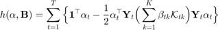
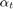
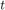
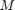
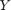
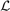
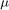

Contents
MKMTRL Multiple Kernel Multi-task Relationship Learning
Solve the following objective function

where, 
where  is the Lagragian multiplier for the task ,  and  are the cell array of size K, M is the cell array of length T, with each cell contains kernel matrix (NtxNt) of a single task  is the loss function (given by opts.loss), is the task relationship (KxK) matrix.  is the regularization parameter,
See paper for more details on the notation.
References:
@inproceedings{murugesan2017multi,
title={Multi-task multiple kernel relationship learning},
author={Murugesan, Keerthiram and Carbonell, Jaime},
booktitle={Proceedings of the 2017 SIAM International Conference on Data Mining},
year={2017},
organization={SIAM}
}